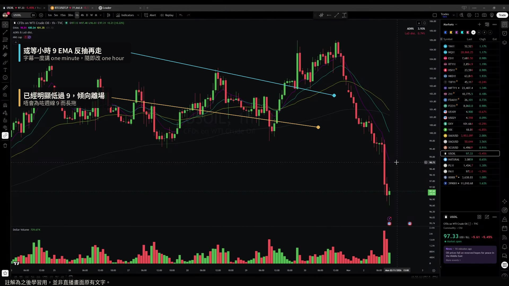
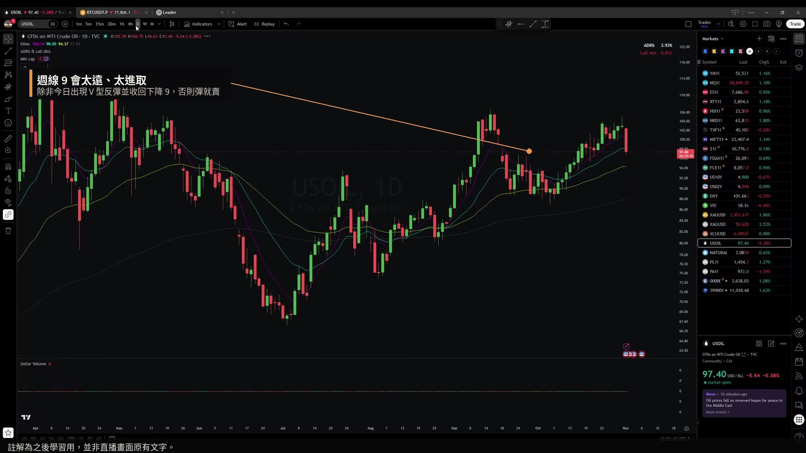

概要
已經延伸之後，離場優先於再擺更長
2:18:29 轉回原油。佢說或會等小時圖 9 EMA 反抽再走，或者直接離場，自己都未定；但因為已經明顯低過 9，傾向離場，唔會為咗週線 9 而長拖，覺得嗰下會太進取。除非今日出現好極端嘅 V 型反彈，並收回下降中嘅 9 EMA，否則大概會在反彈賣出。字幕一度講 one minute，隨即改成 one hour；又把 9 EMA 聽成 nine year。較早 28:28 已有即場處理原油嘅一科，本頁係臨近收播時對離場計劃嘅補充。
圖一 · 主圖
或等小時 9 反抽；已經明顯低過 9
直播 2:18:36

原話
For USO, for oil, I would wait for maybe the 9 EMA pullback on the one hour chart, or the exit, maybe, I'm not sure. Yeah, probably going to exit, because it's well under the 9 EMA. I probably not going to swing for like the weekly nine. That will be pretty crazy.
USO、原油呢邊，我或會等小時圖 9 EMA 反抽，或者離場，我都未定。係呀，可能會走，因為已經明顯低過 9 EMA。大概唔會為咗週線 9 而長拖，嗰下會幾瘋狂。
字幕先講 “one minute uh one hour”，又把 9 EMA 聽成 “nine year”。Whisper 較清楚寫 9MA、one hour。本站按此更正。
點樣讀
兩個選擇並排：等小時 9 反抽，或者因為已經低過 9 而先走。週線 9 被明確排除，因為太遠。
圖二
唔會為週線 9 長拖；除非 V 型收回下降 9
直播 2:19:00

原話
Although it looks pretty good, but yeah, I think unless it's going, it's doing something crazy today, like a V-shaped recovery into and reclaiming the declining 9 EMA, or probably I'm going to sell it into the bounce.
雖然睇起來都仲可以，不過除非今日行得好極端，例如 V 型反彈並收回下降中嘅 9 EMA，否則我大概會在反彈賣出。
YouTube 寫 “feedip recovery”，Whisper 寫 “fee shift recovery”，按上下文係 V-shaped recovery。
點樣讀
例外條件講得很窄：要今日已經出現 V 型並收回下降 9，否則就是彈出就賣。呢句係當時計劃，唔係保證會點執行。
附註
注意事項
- 字幕把 9 EMA 聽成 nine year、把 V-shaped 聽成 feedip。本站按上下文同 Whisper 較清楚嘅一方更正。
- 圖例冇印均線週期。睇唔到成交價或者倉位。
免責聲明：呢份係教育拆解，唔係投資建議，亦唔好當作買賣指示。